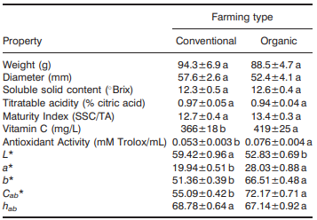
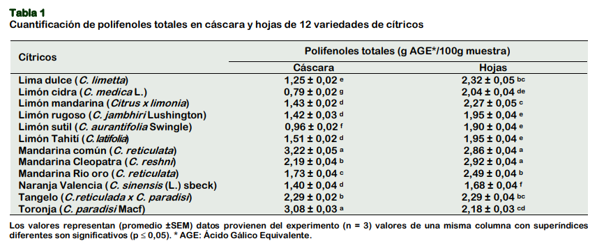
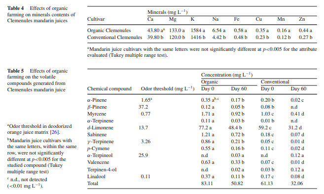

Articles
Article 1 - P. Navarro, Pérez-López A.J, Mercader M.T, Carbonell-Barrachina A.A, Gabaldon J.A.
Article:
- Antioxidant Activity, Color, Carotenoids Composition, Minerals, Vitamin C and Sensory Quality of Organic and Conventional Mandarin Juice, cv. Orogrande
- pag.9
- vol.17: 241
- (2011)
- Sempre posem primer els autors pel cognom i les inicials del nom, després l'any entre parèntesis, el títol, després el nom de la revista abreujat, el volum i les pàgines que té.
Es va observar una diferència significativa en el contingut de vitamina C entre els dos tipus de mandarina. Les mostres ecològiques van presentar una concentració mitjana de 419 ± 25 mg/L, significativament més gran que la de les mandarines convencionals (366 ± 18 mg/L), com indiquen les lletres diferents assignades per l'anàlisi estadística.
Article 2 - Gómez Ordoñez, Diaz Reategui, Tib.
Els extractes metanòlics de les escorces de diferents varietats de mandarina —la mandarina comuna, la Cleopatra i la Río Oro— no van mostrar diferències significatives per captar radicals DPPH, és a dir, en aquesta prova totes tres varietats tenen una activitat similar. En canvi, en la prova amb radicals ABTS+, l’extracte de la mandarina Cleopatra va ser millor que el de la Río Oro. És important destacar que l’escorça de mandarina (Citrus reticulata) és una font molt rica en compostos que beneficien la salut, com la vitamina C, els carotenoides i antioxidants polifenòlics. Pel que fa a les fulles, l’extracte de la mandarina comuna va ser millor que el de la Río Oro en la capacitat antioxidanta, mentre que no es van trobar diferències estadísticament significatives entre la Cleopatra i la Río Oro. De manera similar, l’activitat contra radicals ABTS+ de les fulles de Cleopatra va ser superior a la de la mandarina comuna, però no hi havia diferència significativa entre la mandarina comuna i la Río Oro.
Article 3 - Nom de l'autor
La Taula 4 mostra que el suc de mandarina procedent de cultius orgànics conté més minerals que el de cultius convencionals. En concret, el suc orgànic presenta 43,80 mg/L de calci, 133 mg/L de magnesi, 1.584 mg/L de potassi i 6,54 mg/L de sodi, mentre que el suc convencional té 39,80 mg/L, 120 mg/L, 1.416 mg/L i 4,42 mg/L respectivament. També destaca un major contingut de ferro (0,58 mg/L vs 0,48 mg/L), coure (0,35 mg/L vs 0,23 mg/L), manganès (0,16 mg/L vs 0,12 mg/L) i zinc (0,44 mg/L vs 0,27 mg/L). Aquestes diferències indiquen que el cultiu orgànic millora la composició mineral del suc i n’augmenta el valor nutricional. La Taula 5 analitza els compostos aromàtics del suc, mostrant que el suc orgànic té inicialment 83,11 mg/L de compostos volàtils, davant dels 61,13 mg/L del suc convencional. Després de 60 dies d’emmagatzematge, el suc orgànic manté 50,82 mg/L, mentre que el convencional baixa a 32,06 mg/L. Els principals compostos detectats són el δ-limonè (77,2 mg/L al dia 0), el mircè (1,71 mg/L) i l’α-pinè (0,35 mg/L), responsables de l’aroma cítrica de la mandarina. Aquests resultats mostren que el cultiu orgànic afavoreix una aroma més intensa i una millor conservació dels compostos volàtils amb el temps.
Article 4 - Nom de l'autor

Aquí pots escriure l'explicació de l'article 4.
Article 5 - Nom de l'autor

Aquí pots escriure l'explicació de l'article 5.
Article 6 - Nom de l'autor

Aquí pots escriure l'explicació de l'article 6.
Article 7 - Nom de l'autor

Aquí pots escriure l'explicació de l'article 7.
Article 8 - Nom de l'autor

Aquí pots escriure l'explicació de l'article 8.
Article 9 - Nom de l'autor

Aquí pots escriure l'explicació de l'article 9.
Article 10 - Nom de l'autor

Aquí pots escriure l'explicació de l'article 10.